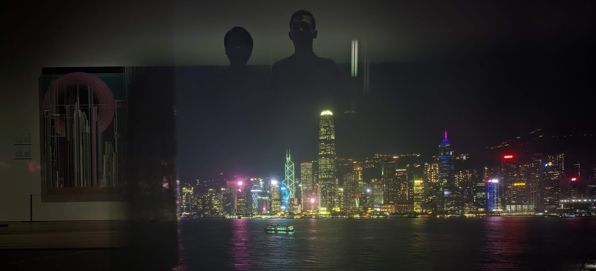
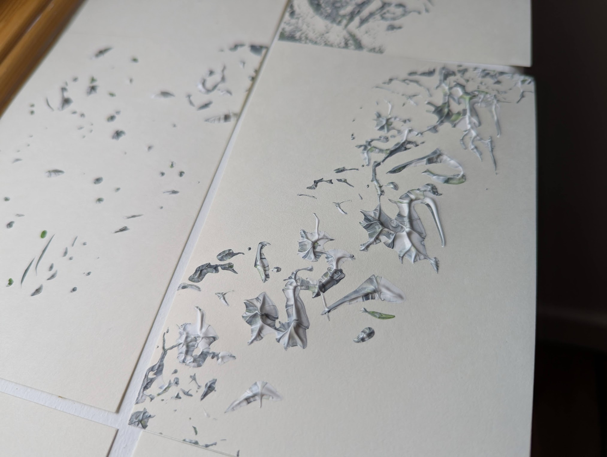

Our journey together started in the fast lane of the busiest city in the world; Hong Kong. Speed may have brought us together, but today we embrace an entirely different rhythm. The world moves ever faster, but to what end? The slow lane encapsulates our lived response.
Through our process we endeavour to act purposefully, intentionally and allow ample space for reflection and change. Thus, we challenge what was thought to be the correct path or approach at the outset.

We do not produce a large volume of work and use our bare hands as opposed to mechanisation. To be tactile with materials is traction. Thus we enjoy a more meandering, present journey to the end product, which invariably is only somewhat like what we planned at the outset.
Puiming & Cathal